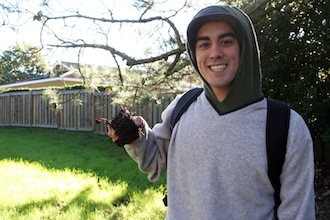

SMC on Facebook
At Saint Mary’s College of California, Sara worked with her colleagues to plan and execute the college’s social media strategy. This included everything from long-term goals for audience building to daily monitoring of the accounts. While the overall strategy was a group effort, Sara did most of the writing for the posts.
Visit Saint Mary's on Facebook »
web management writing
Saint Mary's College Website
When Sara joined Saint Mary’s College of California, the website redesign project was well under way. The website was a few months from launch, the new content managements system was still in development, and people across campus had started working on their new pages. She jumped right in and started running the training sessions, teaching more than 150 people to use the new CMS over the course of 4 months. She also started serving on the redesign committee, and worked on a cross-department team to make sure the new CMS met the needs of content creators across campus.
After the website launched, Sara continued to work on maintaining content, including the websites interactive homepage. She also worked with departments across campus to refine their websites and improve content and design. After turning over the bulk of training tasks to the Instructional Technology team, she continued to help CMS users troubleshoot, and helped start the on-campus users group.
Visit the Saint Mary's website »
web management

Email Templates
In the Office of College Communications at Saint Mary’s College, Sara helped many departments get the word out about their events. One of the best ways to accomplish this, of course, is through email marketing. She assisted by coding one-off templates for special events, as well as creating reusable templates for newsletters. In addition, she worked with staff members in different departments, making sure they knew how to reuse templates and send emails on their own.
web management
Performing Justice
An interview with a Saint Mary's alumna who is doing great things in the world. Originally published in Saint Mary's Magazine.
writing
Gaels Vote
To cover election day on campus, Sara traveled to the polls with students. She also interviewed an elected alum and polled the SMC Facebook audience for their memories of voting for the first time.
writing
Flarf: Where Plagiarism Meets Creativity
Jan Term is a special time on the Saint Mary's campus where students devote the month to one course. Unlike a typical intersession, Jan Term is a chance to explore new ideas and delve into a topic outside your normal course of study. Sara profiled one such class for the 2013 Jan Term session, a class called, "Flarf and Conceptual Writing."
Read Flarf: Where Plagiarism Meets Creativity »
writing
writing
Wild Mushrooms of the Bay Area
In 2013, one Jan Term class offered at Saint Mary's was "Wild Mushrooms of the Bay Area." Sara hiked with the class, stopping to take pictures and chat with students about their hunts. Sadly, one of the class rules was no eating the mushrooms.
View the photo essay Wild Mushrooms of the Bay Area »
writing

Friends of the San Francisco Public Library
The main site for Friends of the San Francisco Public Library predated Sara’s employment there, but she worked to ensure that the content on the site was up to date.
Before leaving Friends, Sara transitioned the donation forms (which were all hard-coded in VB.net) to a new online communications platform, Blackbaud NetCommunity Spark. During the migration process, she coordinated efforts to move the entire database to a fully-hosted solution, trained staff on how to access the new fully-hosted solution and made updates to every “donate” link on the website so that they point to the new donation form.
Visit Friends of the Library's website »
web management

Sara in a Nutshell
Sara got involved in the tech world when she was 15 as a Quality Assurance Analyst. She spent 2 years in high school testing insurance rating software (yawn) before moving to San Francisco to major in Sociology at the University of San Francisco.
When not trying to align pixels and wrangle CMS’s, Sara enjoys cooking and tries to spend as much time sewing as she does ripping out stitches. She also has an unreasonable love for period British dramas and has seen every film incarnation of Sense and Sensibility. Although she dabbles in photography a bit, she apparently never photographs herself and had a heck of a time finding a headshot for this page. She lives in Concord with her husband, Zeph, and their two fluffy cats, Azrael and Jake.
about
Education
Sara graduated from USF summa cum laude with minors in Media Studies and Gender and Sexuality Studies. Her favorite moment in time at USF was teaching her Sociology professors the ins and outs of World of Warcraft, a necessity for her senior thesis on women’s gender performance in the game’s virtual world.
about
Work
Sara is currently the Interactive Media Specialist in the Office of College Communications at Saint Mary’s College of California. She helped to launch a new website and new content management system in October of 2011. As part of that project, she trained over 100 content managers on how to use the new drupal-based CMS. She works with a team to maintain the college’s official social networking sites, was involved in creating the college’s social media plan, and will soon assist in forming a campus-wide social media working group.
about